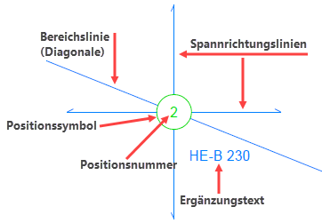
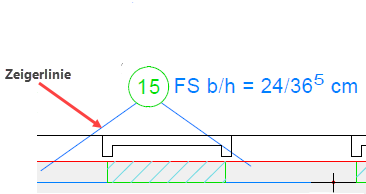
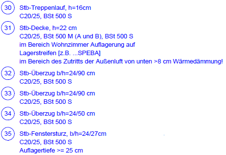

Positionskreise werden für die Beschreibung statischer Positionen verwendet. Die Zuordnung zu einem Bauteil kann für flächenförmige Bauteile mittels Bereichslinie (Diagonale), für punkt- oder linienförmige Bauteile mittels Zeigerlinien erfolgen. Um die Zeichnung möglichst übersichtlich zu gestalten, stehen verschiedene Symbolformen und Darstellungsstile zur Verfügung. Positionsnummern können individuell vergeben oder beim Anlegen eines Positionskreises automatisch hochgezählt werden.
Bestandteile
 |
 |
Bereichszuordnung (mit Bereichslinie und Spannrichtungslinien) |
Bauteilzuordnung (mit Zeigerlinien) |
Spannrichtungslinien - Angabe der Spannrichtung (Tragrichtung). Ergänzungstext - Kurzbeschreibung der statischen Position. Symbol - Umrandung der Positionsnummer. Positionsnummer (-text) - Verweis auf eine statische Position. Kann entweder eine Folge von Zahlen oder Buchstaben oder eine Kombination aus beiden sein. Bereichslinie (Diagonale) - Ordnet den Positionskreis einem Bereich zu. Zeigerlinie - Ordnet den Positionskreis einem bestimmten Bauteil, z. B. einer Stütze oder einer Wand, zu. |
|
Tabellentexte
Tabellentexte bieten die Möglichkeit, einem statischen Positionskreis weitere Informationen zuzuordnen. Sie können als Legende für die statischen Positionen in Tabellenform zusammengefasst und in der Zeichnung abgelegt werden. Die Legende (Tabelle) kann für die Weiterverarbeitung in anderen Programmen in die Windows®-Zwischenablage kopiert werden.
Tabellentexte können individuell erfasst und/oder aus vorhandenen Textmodulen zusammengestellt werden. Oft benötigte Textmodule, z. B. für die Betongüte, Montageanweisungen etc., sind im ISBCAD Lieferumfang bereits enthalten. Die vorhandenen Textmodule können bearbeitet und von Ihnen durch beliebige weitere Module ergänzt werden. Sie werden in der Zeichnung gespeichert und lassen sich über die Profileinstellungen in andere Zeichnungen übertragen.
 |
Zugehörige Referenzen: